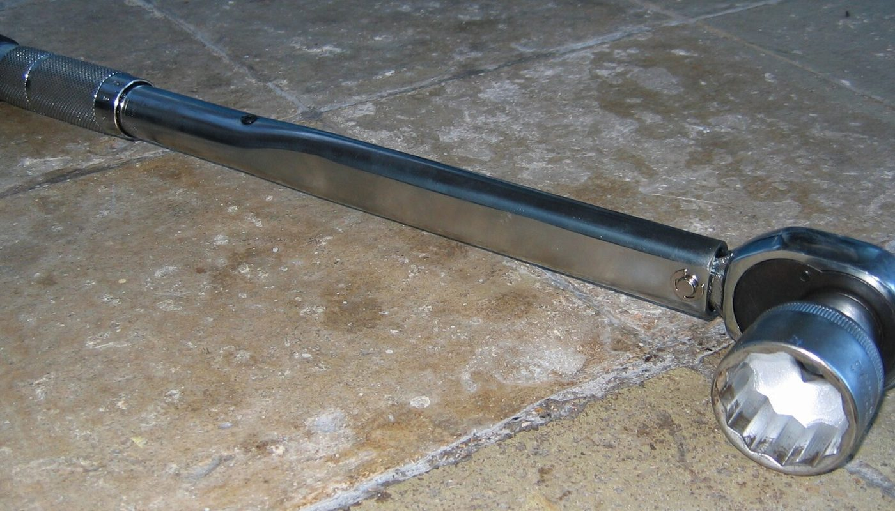
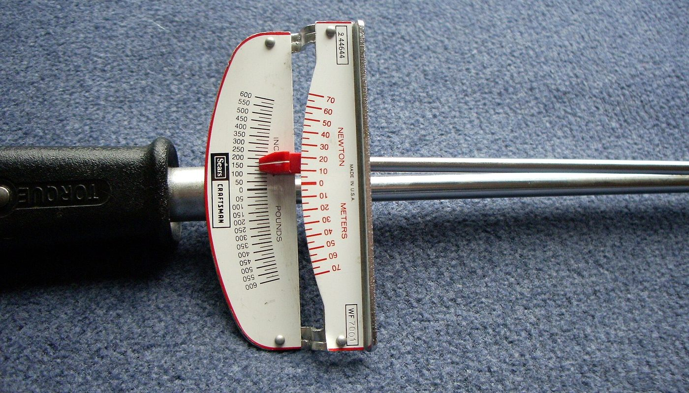

Outillage · aucun lien affilié sur cette page · prix relevés le 2 oct. 2026
Clé dynamométrique KS Tools 40-200 Nm : le prix réel d'un bon outil, et les pièges avant d'acheter

Une clé dynamométrique sert à serrer au couple exact — ni trop, ni trop peu. C'est l'outil qui évite de fendre un filetage ou de laisser une roue mal serrée. La référence KS Tools ERGOTORQUEprecision 516.1442 (1/2″, 40-200 Nm, précision annoncée ±3 %) était affichée à partir de 56,99 € le 2 oct. 2026, contre 159,33 € sur la page du fabricant le même jour. Un tel écart mérite qu'on regarde ce qu'on achète.
Aucun lien affilié sur cette page — voir comment ça marche Prix lus le 2 oct. 2026 Norme DIN EN ISO 6789:2017
En bref
- Ce que fait cette clé : serrer au couple réglé, dans une plage de 40 à 200 Nm, avec une précision annoncée de ±3 %, conformément à la norme DIN EN ISO 6789:2017 citée par le fabricant.
- Les prix relevés le 2 oct. 2026 : 56,99 € (Amazon.fr, offre promotionnelle, livraison offerte), 82,41 € (planet-tools), 116,80 € (ifd-outillage), 159,33 € affichés sur la page du fabricant (kstools.fr).
- Pourquoi l'écart est si grand : le prix bas relevé sur la place de marché est une promotion, pas un tarif stable. Sur ce type d'outil, le prix bouge vite — vérifiez-le (et la disponibilité) le jour de l'achat.
- Ce que la fiche ne dit pas : la périodicité de contrôle de la précision, le geste de remise au minimum après usage, et le fait qu'une clé trop large pour un petit couple est moins juste qu'une clé adaptée.
- Ce qui n'est pas chiffré ici : le coût d'un éventuel étalonnage périodique. Nous ne l'avons pas relevé, donc il n'apparaît dans aucun total.
À quoi sert une clé dynamométrique, et pourquoi la norme compte
Serrage au couple, cela veut dire appliquer une force de rotation précise sur un boulon ou un écrou, mesurée en newtons-mètres (Nm). Trop peu, et la pièce peut se desserrer ; trop, et l'on étire le filetage, on fend la matière, on déforme un joint. Un constructeur prescrit une valeur précise pour chaque vis importante, et cette valeur n'est atteignable qu'avec un outil qui la mesure.
La référence citée porte une précision annoncée de ±3 %, dans le cadre de la norme DIN EN ISO 6789:2017 — c'est la norme qui définit ce que « précis » veut dire pour ce type d'outil :
Ce qu'elle n'empêche pas — la dérive. Une clé qui a subi des chocs, un stockage en tension, un usage intensif finit par s'écarter de sa classe. C'est ce qu'un contrôle périodique (étalonnage) sert à vérifier. Nature de la norme DIN EN ISO 6789:2017 citée par le fabricant sur la fiche du produit, et principe du contrôle périodique de la précision d'un outil dynamométrique — constatés le 2 octobre 2026. Nous ne chiffrons pas le coût d'un étalonnage (non relevé).
Autrement dit : la valeur d'une clé dynamométrique n'est pas « le couple maximal qu'elle affiche », mais la confiance qu'on peut avoir dans la valeur réglée. C'est là que se joue la différence entre un outil de bricolage et un outil de travail.
Les prix : ce qui est lu, où, et quand
Même référence, même jour, quatre vendeurs. Les montants ci-dessous ont été relevés le 2 octobre 2026. Nous les séparons dans le tableau — certains sont des prix affichés stables, d'autres des promotions.
Clé dynamométrique KS Tools 516.1442 (40-200 Nm) — prix relevés le 2 oct. 2026
Barres proportionnelles aux montants ci-dessus, base à zéro. Tous relevés le 2 octobre 2026. Les prix des revendeurs sont des prix affichés ; celui d'Amazon est une promotion (offerte en tête de tendance d'un site de bons plans le même jour) et peut disparaître en quelques heures. Le montant du fabricant (159,33 €) est le prix lu dans les données de sa propre page produit.
| Où | Quoi | Prix relevé le 2 oct. 2026 | Nature du prix |
|---|---|---|---|
| Amazon.fr | KS Tools ERGOTORQUEprecision 516.1442 — 1/2″, 40-200 Nm (EAN 4042146180662) | 56,99 € (livraison offerte) | promotion — volatile |
| planet-tools | même référence | 82,41 € | prix affiché |
| ifd-outillage | même référence | 116,80 € | prix affiché |
| kstools.fr (fabricant) | même référence | 159,33 € | prix lu sur la page du fabricant |
La lecture honnête : ce n'est pas « la même clé pour trois fois moins cher ». C'est la même référence, à des moments et des conditions de vente différents. Le prix bas vient d'une promotion en tête de tendance ; il peut remonter vers les 80-160 € des autres vendeurs dès que l'offre s'arrête. Si vous décidez d'acheter, faites-le en connaissant ce point — et vérifiez la disponibilité, car une promo épuisée ne se commande pas.
Les quatre pièges de l'achat d'une clé dynamométrique
1. La plage 40-200 Nm n'est pas « la meilleure » : c'est « la polyvalente »
Une clé est plus juste au milieu de sa plage qu'à ses extrémités. La plage 40-200 Nm couvre le serrage automobile courant (les roues se serrent souvent autour de 110-140 Nm), et c'est pour cela qu'elle est si répandue. Mais si vos besoins tournent autour de 20 Nm — petites vis, moto, matériel sensible — cette clé travaille alors trop bas dans sa plage, et une clé plus petite serait plus fiable. « Grande plage » ne veut pas dire « adaptée à tout ».
2. Vérifier le type : déclenchement ou lecture directe
Les présentations en ligne montrent souvent l'un pour l'autre. Une clé à déclenchement (click) se règle, puis émet un déclic au couple atteint. Une clé à lecture directe (beam) affiche le couple pendant le serrage. La référence décrite ici est de type dynamométrique à réglage — assurez-vous que c'est bien ce que vous voulez, et que la photo correspond au bon modèle, avant de commander.
3. Une clé dynamométrique n'est pas un levier de desserrage
C'est l'erreur la plus coûteuse. Utiliser une clé dynamométrique pour desserrer un boulon récalcitrant, ou forcer au-delà du couple réglé, abîme le mécanisme de mesure. Après chaque usage, on remet l'outil au minimum de sa plage (jamais stocké en tension), à l'abri des chocs et de l'humidité. Ces gestes ne sont pas dans la fiche produit — ils décident pourtant de la durée de vie de l'outil.

4. La précision annoncée n'est pas éternelle
« ±3 %, DIN EN ISO 6789:2017 » décrit l'outil tel qu'il doit tenir sa classe. Ça ne dispense pas d'un contrôle périodique : les professionnels font vérifier leurs clés à intervalle régulier, car un outil qui a vécu dérive. Un particulier n'a pas besoin d'un étalonnage en laboratoire chaque mois, mais il gagne à savoir que la valeur affichée n'est pas garantie à vie — et que le contrôle a un coût que nous n'avons pas relevé ici.
Trois étapes avant de commander
La checklist avant d'acheter
- Confirmez le type d'outil : à déclenchement (click) ou à lecture directe (beam) ? La photo ne suffit pas toujours.
- Vérifiez la plage utile : 40-200 Nm couvre la mécanique auto courante. Pour du petit couple répété, visez plus bas.
- Contrôlez le couple de vos vis importantes (souvent 110-140 Nm pour une roue voiture) : il doit tomber au cœur de la plage.
- Relisez le prix et la disponibilité le jour de l'achat : la promotion relevée est volatile, les autres vendeurs étaient 1,5 à 3 fois plus cher.
- Prévoyez les gestes d'usage : jamais pour desserrer, remise au minimum après emploi, stockage à l'abri.
- Notez la référence exacte : ERGOTORQUEprecision 516.1442, EAN 4042146180662 — pour ne pas confondre avec la variante « avec certificat d'étalonnage » (516.1442ETAL), qui est un autre produit.
Par où commencer, concrètement
Ces liens sont ceux du fabricant et du revendeur. Aucun n'est affilié : ils sont là pour que vous vérifiiez le produit et son prix à la source.
- Le produit chez le fabricant : fiche officielle de la clé KS Tools ERGOTORQUEprecision 516.1442.
- La norme de précision : DIN EN ISO 6789:2017, citée par le fabricant sur la fiche — c'est le cadre qui définit la classe d'un outil dynamométrique.
- Le comparatif de prix : vérifiez la référence exacte (516.1442) chez plusieurs vendeurs le jour J — l'écart relevé le 2 octobre 2026 allait de 56,99 € à 159,33 €.
Le réflexe qui évite le mauvais achat : choisir la plage selon le couple dont vous avez besoin, vérifier le type d'outil, et regarder le prix le jour de l'achat — pas la veille.
Questions
À quoi sert une clé dynamométrique ?
À serrer au couple exact (en Nm) prescrit par le constructeur : ni trop peu (risque de desserrage), ni trop (filetage étiré, matière fendue, joint déformé). Une clé ordinaire ne mesure rien ; celle-ci, si.
Quelle plage choisir ?
40-200 Nm couvre la mécanique auto courante (roues souvent 110-140 Nm). Mais une clé est plus juste au milieu de sa plage : pour du petit couple, une clé plus petite est préférable.
Faut-il la faire recalibrer ?
Oui, périodiquement. La norme citée (DIN EN ISO 6789:2017) définit la classe à la livraison ; un outil qui a vécu dérive. Nous n'avons pas relevé le coût d'un étalonnage.
Click ou beam ?
À déclenchement (click) : on règle la valeur et on serre jusqu'au déclic. À lecture directe (beam) : on lit le couple pendant le serrage. Vérifiez lequel correspond à la référence visée.
Cette page contient-elle des liens affiliés ?
Non, aucun à ce jour. Le programme Amazon Partenaires France est enregistré comme candidat — aucun compte créé, aucun lien posé. Si cela change, le lien sera étiqueté et cet encadré daté.
Comment cette page est faite
- Aucun lien affilié ici. Le programme « Amazon Partenaires France » est enregistré chez nous comme candidat — aucun compte créé, aucun lien posé. Si un lien affilié arrive un jour, il sera étiqueté « lien affilié — on est payé si vous souscrivez » avec
rel="sponsored", et cet encadré sera daté. - Les prix sont ceux relevés le 2 octobre 2026 : offre promotionnelle à 56,99 € repérée en tête de tendance d'un site de bons plans et recoupée avec le produit (référence 516.1442, EAN 4042146180662) ; 82,41 € (planet-tools) ; 116,80 € (ifd-outillage) ; 159,33 € lus dans les données de la page du fabricant (kstools.fr). Chaque montant porte sa date.
- Ce que nous ne savons pas est écrit comme tel : le coût d'un étalonnage périodique et la commission nette d'un éventuel programme d'affiliation. Rien de cela n'apparaît dans un total.
- La promotion est présentée comme telle — pas comme un prix stable. Une offre de ce type peut disparaître en quelques heures ; nous ne promettons ni le prix, ni la disponibilité.
- Les informations techniques (plage 40-200 Nm, précision annoncée ±3 %, norme DIN EN ISO 6789:2017, référence et EAN) proviennent de la fiche du fabricant, relevée le 2 octobre 2026.
- Nous ne fabriquons aucun avis, aucun témoignage et aucune statistique.
- Corrections : si un prix a changé ou si nous nous sommes trompés, écrivez-nous, nous corrigeons et nous datons la correction.
Sources
- Fiche fabricant KS Tools de la clé ERGOTORQUEprecision 1/2″ 40-200 Nm, référence 516.1442 (EAN 4042146180662) : plage 40-200 Nm, précision annoncée ±3 %, norme DIN EN ISO 6789:2017 ; prix lu dans les données de la page (159,33 €) — page relevée le 2 octobre 2026.
- Offre à 56,99 € (livraison offerte) sur la place de marché Amazon.fr — repérée le 2 octobre 2026 via un site de bons plans qui la plaçait en tête de tendance (deux passages constatés) ; produit recoupé par sa référence et son EAN. Prix volatil.
- Prix revendeurs relevés le 2 octobre 2026 : 82,41 € (planet-tools), 116,80 € (ifd-outillage).
- Photos : clé à douille (tête et carré d'entraînement) — Heron2, CC BY-SA 3.0 ; échelle de lecture d'une clé dynamométrique à aiguille — EncMstr, CC BY-SA 3.0. Toutes deux via Wikimedia Commons (images d'illustration ; elles ne représentent pas la référence KS Tools vendue).
Avis clients
Avis sur ce guide, publiés après vérification. Chaque avis négatif reçoit une réponse publique — c'est comme ça qu'on s'améliore.
Les premiers avis seront publiés ici dès que de vrais lecteurs en enverront.